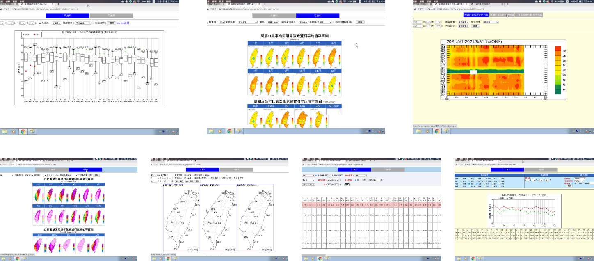

Mining usage insights and summarizing a suitable solution
I initially selected several commonly-used systems from a hundred systems in the CMF, then conducted a focus group with several forecasters to confirm the actual needs. After conducting in-depth interviews, I dug out the most common approach they used while dealing with their routine reports: The users tend to spot the phenomenon on the graphs, confirm precise data in tables, and look up other graph types for details.
INSIGHT
Like most UX designers, I always believe in evidence-based design and persue value-oriented products, but my marketing background adds a bit different to my design plans.
UX researchers and marketing strategists work similarly in process and methodology but slightly different. Strategists will set up the likely hypothesis based mainly on the quantitative study while the UX research verifies the ideas repeatedly based on qualitative research.

The system I initially selected from the CMF.